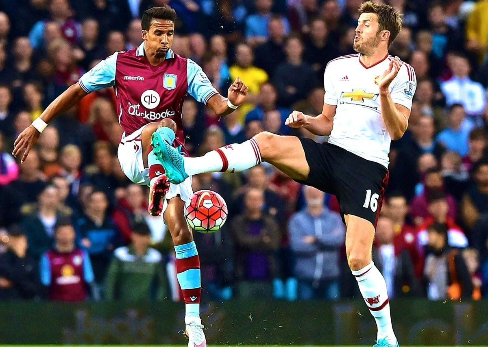

Short Information
What is Football?
Football, also called association football or soccer, is a game involving two teams of 11 players who try to maneuver the ball into the other team’s goal without using their hands or arms. The team that scores more goals wins. Football is the world’s most popular ball game in numbers of participants and spectators.
What is the Origin of Football?
Modern football originated in Britain in the 19th century. Though “folk football” had been played since medieval times with varying rules, the game began to be standardized when it was taken up as a winter game at public schools. The Football Association, formed in 1863, codified the rules of the game and hosted the first cup competition between regional football clubs in Britain.
How many people play football?
The Fédération Internationale de Football Association, or FIFA, estimated that at the turn of the 21st century there were approximately 250 million football players worldwide.
What is footballs premier tournament
The World Cup is football’s premier tournament. It is a quadrennial tournament and is likely the most popular sporting event in the world, drawing billions of television viewers every tournament.
